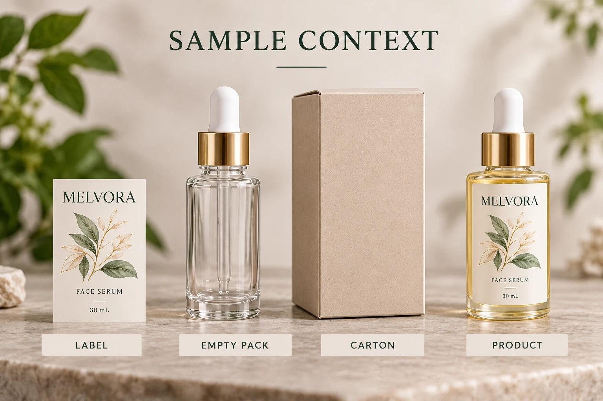

Record the event in plain terms
Identify when and where the observation occurred, which pack or supplied material was involved and who should coordinate the response. Preserve the original report as available, while distinguishing the observer's description from a proposed cause.
Record the job, artwork, construction and relevant delivery references. Include the filled-product identity and packaging configuration through the site's appropriate controlled channels. A loose-label issue and an observation involving filled finished packs may require different review ownership.
If staff report a health, exposure or product-safety concern, route it promptly through the site's established procedures and responsible personnel. An online packaging worksheet should not become permission to continue use or a substitute for that response.
Preserve the packaging context
Ask the quality owner which specimens and records should be preserved and how. Relevant context may include the printed supply, an available empty container, outer packing and the finished pack. Do not dismantle, open or deliberately expose materials merely to complete this article's categories.
Keep any existing comparison samples identifiable. A retained raw label and a filled bottle from another job cannot be described as matched controls without a technical basis. Record differences rather than assuming they isolate the ink or adhesive.
The quality-evidence guide covers job and stock traceability. Here the added requirement is the relationship between the observation and several possible packaging or product components, with a responsible technical investigation.
Keep known history separate from assumptions
Record receipt, opening, repacking and storage events where known. The storage guide helps maintain that history for unused labels. A room's present conditions do not fill a gap in the material's earlier history.
Note whether the observation concerns a newly opened package, a stored specimen or another clearly described stage. Preserve uncertainty when timing is unknown. Do not turn a familiar descriptor into proof of a particular solvent, curing condition or chemical mechanism.
Request relevant supplier construction and production information through the technical investigation. The appropriate parties decide which data or specialist analysis is needed. This article supplies no cure-time prescription, ventilation remedy or analytical method.
Let the technical owner select comparisons
An investigation can require controlled comparisons, but those comparisons should be designed by competent personnel for the question. Do not ask employees to repeatedly sniff bottles, warm samples or create an informal exposure experiment.
Provide the existing specimen and history record, then ask which additional evidence is necessary. Record who collected any later samples and what conditions they represent. The report should distinguish the observed finding, unresolved source and authorized disposition.
Also keep a visible mark or transfer question separate. A printed surface that looks acceptable does not answer an odor concern. An odor observation alone does not establish visible ink transfer or product contamination. Avoid treating several distinct questions as a single assumed printing fault.
| Record | Input to provide | Technical decision supported |
|---|---|---|
| Event | Actual report and observed stage | What precisely needs investigation? |
| Identity | Job, construction and relevant product/pack references | Which materials and stock are involved? |
| Configuration | Available container, label and outer-pack context | Which components need considering? |
| History | Known receipt, storage and opening events | What conditions are established or unknown? |
| Specimens | Existing references and preserved sample IDs | What evidence can be examined appropriately? |
| Investigation | Responsible owner and requested next evidence | Which comparison or specialist review is justified? |
| Disposition | Actual site decision and affected scope | What may proceed, remain held or require another action? |
Begin with event, identity and responsible ownership. Preserve evidence under the site's instruction, obtain the requested technical information and record the actual response. Do not release a safety-related concern because an email acknowledges receipt of the report.

Different observations need different scope
A hypothetical report limited to an identified unused printed supply gives the converter a focused packaging question. A report involving a filled cosmetic pack has a wider product and packaging context and needs the brand's responsible quality ownership.
Neither situation proves the source from its description alone. The useful first response is to preserve traceability and obtain the appropriate review, rather than prescribe a reprint, air out the stock or declare it harmless without evidence.
For a cosmetic label investigation, prepare the job reference, exact observed stage, construction, available history and responsible review contact. The inquiry form drafts a message; send relevant records through email or WhatsApp under the site's process. Ask what evidence is needed next while keeping the observed event separate from an unconfirmed cause.